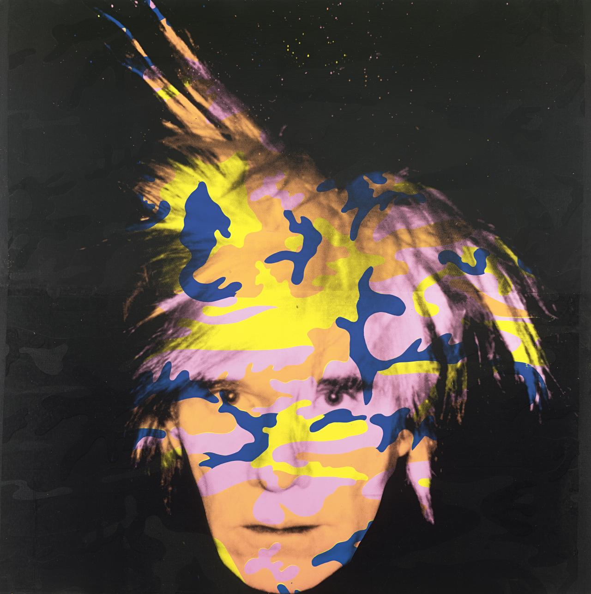

Final Exam for CIMW100B
Create by JM Wesierski
Self Portrait by Andy Warhol (1986)
This site is dedicated to the life and works of artist Andy Warhol, and the new art form he introduced known as Pop Art.
Here you can learn about pop art, other artists and and its history.
Want to watch a video of Andy Warhol eating a burger.
Here you can see and read about some of the best art works by Andy Warhol.
Which work is your favorite? Let us know here.
Really like a work? You can buy them here for the actual appraised price.